Table of Contents
Grid: A Powerful Tool for Web Layout Design
In the world of web design, creating visually appealing and well-structured layouts is crucial. One effective
tool that has revolutionized the way websites are designed is the CSS grid. With its flexible and intuitive nature,
the grid system provides designers with a powerful framework for arranging and organizing web page elements.
In this article, we will introduce the basics of grid and explore its importance along with some demonstrations.
CSS grid is a layout system that allows designers to create complex web page structures by dividing the layout
into rows and columns. It provides a two-dimensional grid that enables precise control over the placement and
alignment of elements within a container. Also, it lets you create a grid-based structure for your web page,
making it easier to achieve responsive designs.
Why is grid important?
- One of the key benefits of using a grid system is its ability to create responsive layouts. Grids provide a flexible structure that automatically adapts to different screen sizes and devices, ensuring consistent and visually appealing designs across various platforms.
- Grids help maintain consistency in design by providing a systematic framework. With grid-based layouts, designers can organize content elements in a harmonious and structured manner, making it easier for users to navigate and understand the website's information hierarchy.
- Designers can easily align and position elements on the grid, reducing the time spent on manual adjustments. This efficiency allows designers to focus more on creativity and refining the overall user experience.
- Grids offer flexibility in terms of layout variations. Designers can experiment with different grid configurations to create unique and engaging designs.
Some examples where grid is commonly used
- Grids are commonly used in magazine-style designs where content is presented in a grid-like structure. This allows for easy placement of articles, images, and other elements in a visually pleasing manner.
- Grids provide an excellent foundation for creating portfolio websites. Designers can use the grid system to showcase their work in a clean and organized manner, making it easier for visitors to navigate through different projects.
- Grids are ideal for displaying product listings in e-commerce websites. By using a grid, designers can arrange product images, titles, prices, and other details in a consistent and visually appealing manner, enhancing the overall shopping experience.
- Also, think of a webpage and how there's usually a navigation bar, a sidebar, and the content in the middle. A CSS Grid helps achieve that sort of styling easily by dividing up the page into different sections where each element can take place in the specified section.
key aspects of the grid concept
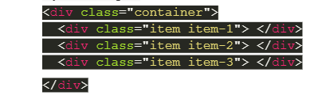
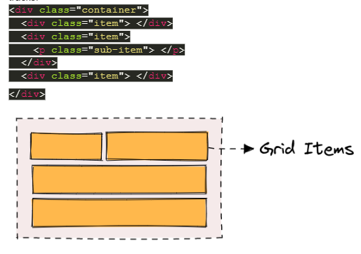
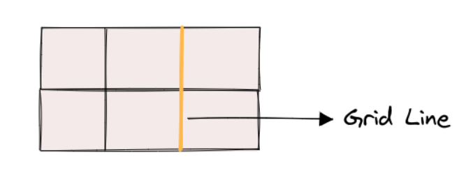
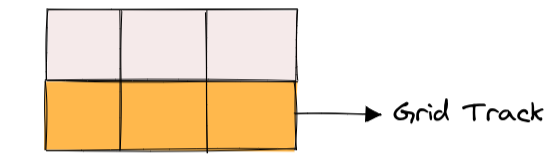
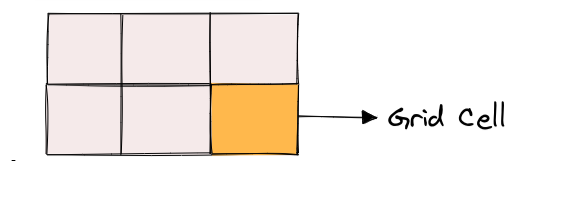
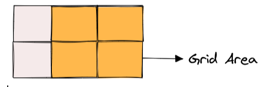
CSS Grid Properties
There are two main types of CSS Grid properties namely:
Parent properties (Grid Container)
Grid Container properties are used to define the layout of the grid container itself. These properties are applied to the parent element that contains the grid items. Some examples are:-
- Display: The display property is used to define the container element as a grid container. To use the display with CSS Grid, set the value to grid. This will turn the container element into a grid container, allowing you to use other grid properties to define the grid layout. -
- grid-template-columns & grid-template-rows: grid-template-columns and grid-template-rows are used to define the size and position of columns and rows in a CSS grid. These properties allow you to create a flexible and responsive grid layout that can adjust to different screen sizes and content.
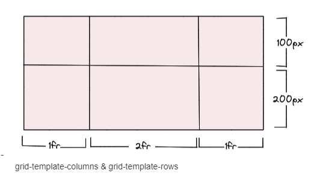
the values represent the track size, and the space between them is the grid line. We can then place elements inside the grid by using the grid-column and grid-row properties. - grid-template-areas: grid-template-areas allows you to define the layout of a grid by assigning names to areas within the grid. These names are used in the grid-area property to place items within the grid.
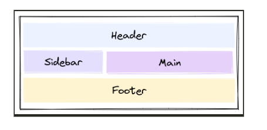-
- grid-template: grid-template is a shorthand property in CSS Grid that allows you to define both the number and size of grid columns and rows in one declaration. -
- column-gap, row-gap column-gap and row-gap define the space between columns and rows, respectively. We have a grid container with three columns and two rows.
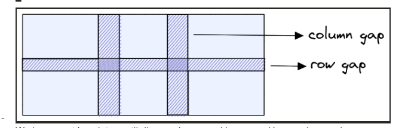 -grid-gap grid-gap is a shorthand property in CSS grid layout that allows you to specify the gap between grid columns and rows at the same time.
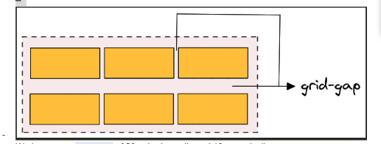- justify-items justify-items is a CSS Grid property that defines how the grid items are aligned along the main axis (the horizontal axis) within their grid container. It is used to control the positioning of items in the grid container when there is extra space available in the main-axis direction.
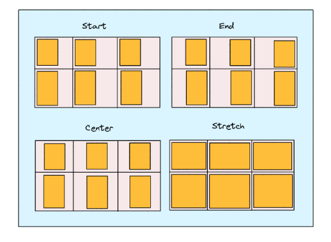
Here are the possible values for justify-items in CSS Grid:
- stretch (default): This value stretches the grid items to fill the available space along the main-axis.
- start: This value aligns the grid items along the start edge of the grid container in the main-axis direction.
- end: This value aligns the grid items along the end edge of the grid container in the main-axis direction.
- center: This value centers the grid items along the main axis of the grid container.
- align-items align-items defines how the grid items are aligned along the cross-axis (the vertical axis) within their grid container. It is used to control the positioning of items in the grid container when there is extra space available in the cross-axis direction.
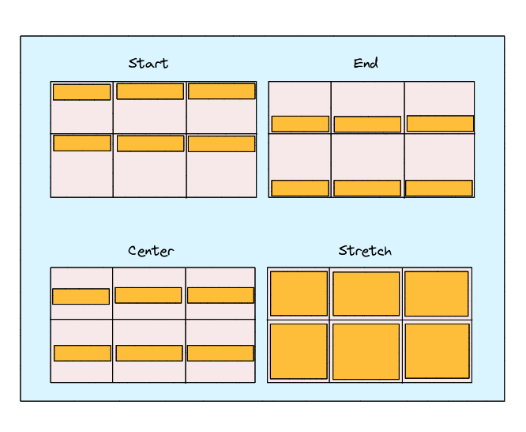 Here are the possible values for align-items in CSS Grid:
-stretch (default): This value stretches the grid items to fill the available space along the cross-axis.
-start: This value aligns the grid items along the start edge of the grid container in the cross-axis direction.
- end: This value aligns the grid items along the end edge of the grid container in the cross-axis direction.
-center: This value centers the grid items along the cross-axis of the grid container.-place-items place-items is a shorthand CSS Grid property that combines the align-items and justify-items properties into a single declaration. It is used to set both the horizontal and vertical alignment of grid items within their grid container. The possible value for place-items in CSS Grid is:: - justify-content justify-content defines how the grid items are aligned along the main axis (the horizontal axis) within their grid container. It is used to control the positioning of the grid container along the main axis when extra space is available in that direction.
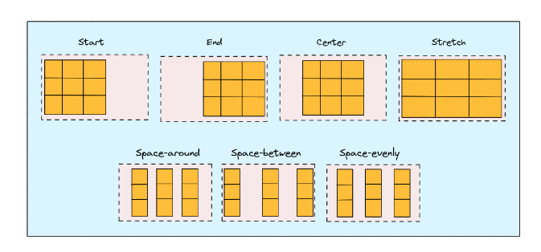 Here are the possible values for justify-content in CSS Grid:
- start (default): This value aligns the grid container along the start edge of the main axis.
- end: This value aligns the grid container along the end edge of the main axis.
- center: This value centers the grid container along the main axis.
- space-between: This value evenly distributes the grid items along the main axis, with the first item at the start edge and the last item at the end edge.
- space-around: This value evenly distributes the grid items along the main axis, with equal space between each item and half that space at the start and end edges.
- space-evenly: This value evenly distributes the grid items along the main axis, with equal space between each item and at the start and end edges.- align-content align-content is a CSS Grid property that defines how the grid items are aligned along the cross-axis (the vertical axis) within their grid container. It is used to control the positioning of the grid container itself along the cross-axis when there is extra space available in that direction.
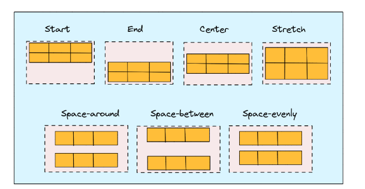 Here are the possible values for align-content in CSS Grid:
- stretch (default): stretches the grid items to fill the available space along the cross-axis.
- start: aligns the grid container along the start edge of the cross-axis.
- end: aligns the grid container along the end edge of the cross-axis.
- center: centers the grid container along the cross-axis.
- space-between: evenly distributes the grid items along the cross-axis, with the first item at the start edge and the last item at the end edge.
- space-around: evenly distributes the grid items along the cross-axis, with equal space between each item and half that space at the start and end edges.
- space-evenly: evenly distributes the grid items along the cross-axis, with equal space between each item and at the start and end edges.
-place-content The place-content property in CSS grid allows you to align and justify grid items along both the horizontal and vertical axes.- grid-auto-columns & grid-auto-rows grid-auto-columns and grid-auto-rows are properties that allow you to define the size of rows and columns that are created automatically to fill the grid container. These properties come into play when there are more grid items than cells in the explicit grid, which means that some cells are created automatically to accommodate the additional items.
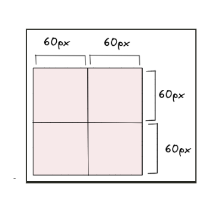-grid-auto-flow It specifies how the grid container should automatically place grid items that don't have a specific grid position set.The possible values for grid-auto-flow are
- row: This is the default value, and it means that the auto-placement algorithm should place items in rows, filling up each row before moving on to the next one.
- column: This value specifies that the auto-placement algorithm should place items in columns, filling up each column before moving on to the next one.
- dense: This value tells the auto-placement algorithm to try to fill in any empty cells as it goes along, rather than leaving them empty and moving on to the next row or column. This can result in items being placed in unexpected locations, but it can also help to fill the grid more efficiently.
-grid The grid property is the shorthand for setting all of the below properties in a single declaration.
- grid-template-rows
- grid-template-columns
- grid-template-areas
- grid-auto-rows
- grid-auto-columns
- grid-auto-flow
Child Properties (Grid Items)
Child properties are the CSS properties applied to the individual child elements of grid items. They are: grid-column-start,
grid-column-end, grid-row-start, and grid-row-end, Grid-column and grid-row, grid-area, justify-self, align-self, and place-self
The properties grid-column-start, grid-column-end, grid-row-start, and grid-row-end are used to specify the location of a grid item
within the grid container.
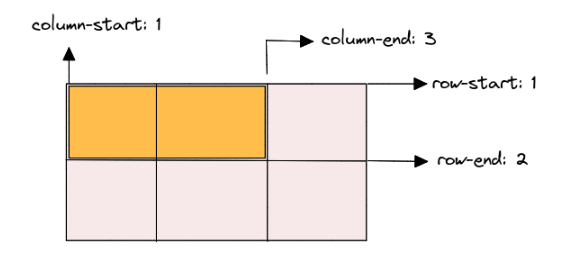
The grid-column-start and grid-column-end properties are used to specify the start and end positions of the grid item along the
horizontal axis (columns). For example, the grid-column-start value of 1 and grid-column-end value of 3 for the .item-1 class
specifies that the grid item should start at column 1 and end at column 3. Similarly, the grid-row-start and grid-row-end properties
are used to specify the start and end positions of the grid item along the vertical axis (rows). For example, the grid-row-start
value of 1 and grid-row-end value of 2 for the .item-1 class specifies that the grid item should start at row 1 and end at row 2.
The grid-column and grid-row properties specify a grid item's location within a grid container. When using these properties on a
child grid item, you can define the starting and ending grid lines on the horizontal (for grid-column) and vertical (for grid-row)
axes to determine the position and size of the item in the grid. You can adjust the values of grid-column and grid-row to position
your grid items as desired within the grid container.
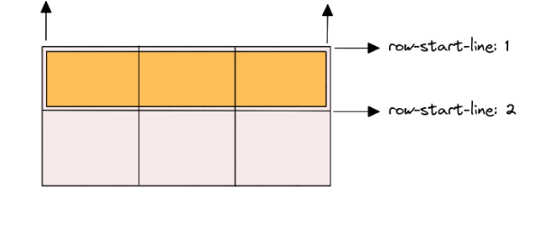
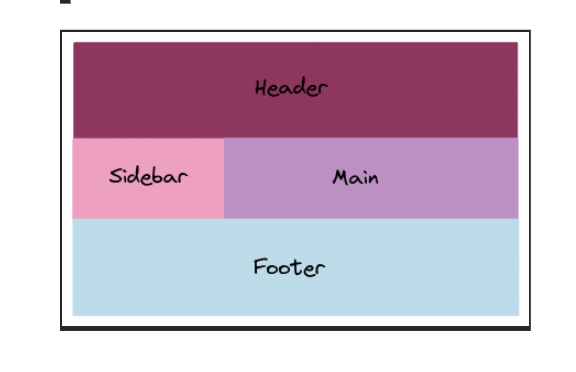
To use grid-area, you need to follow these steps:
Define the grid layout on the parent container using the grid-template-areas, grid-template-rows, and grid-template-columns properties.
Assign a name to each grid area using the grid-area property on the child items. The name should correspond to the name you
defined in the grid-template-areas property.
Set the position and size of the grid item using the grid-row-start, grid-row-end, grid-column-start, and grid-column-end properties.
image
In this example, we have a container with a grid layout that defines three rows and two columns, and three named grid areas.
Each child item is assigned to a grid area using the grid-area property, and its position and size are set using the grid-row-start,
grid-row-end, grid-column-start, and grid-column-end properties.
using display: flex, justify-content, and align-items. The justify-self, align-self, and place-self properties are then used to control the alignment of individual items within their cells. The first item is aligned to the start of its cell horizontally using justify-self: start. The second item is aligned to the end of its cell vertically using align-self: end. The third item is centered both horizontally and vertically using place-self: center stretch, which sets the horizontal alignment to center and the vertical alignment to stretch.
Tricks while using CSS Grids
To create more flexible and maintainable CSS grids, you can use these tricks to simplify your code.
- Use the repeat() function to simplify grid templates: example; Instead of this grid-template-columns: 1fr 1fr 1fr 1fr 1fr;
Use the repeat() function for cleaner code grid-template-columns: repeat(5, 1fr);
- Use auto-fit or auto-fill to create flexible grids: example; This grid will automatically create as many columns as will fit in the container
grid-template-columns: repeat(auto-fit, minmax(250px, 1fr)); . This grid will always create 3 columns, and will fill any extra space
with empty cells grid-template-columns: repeat(auto-fill, minmax(250px, 1fr));
- Use grid-gap to add spacing between grid items: example; This grid will have a 20px gap between grid items
grid-gap: 20px;
- Use grid-template-areas to create named grid areas
- Creating a responsive grid with media queries
- Nesting grids for more complex layouts
To conclude, it is important to understand the basic principles of grids and practice working with them. Start by experimenting
with simple grid structures and gradually explore more complex layouts. Familiarize yourself with CSS grid systems and frameworks
that provide ready-to-use grid structures, making it easier to implement grids in your designs. Remember, the grid concept is a
powerful tool that can greatly enhance your web design skills. Embrace its structure, experiment with different layouts, and enjoy
the creative possibilities it offers.